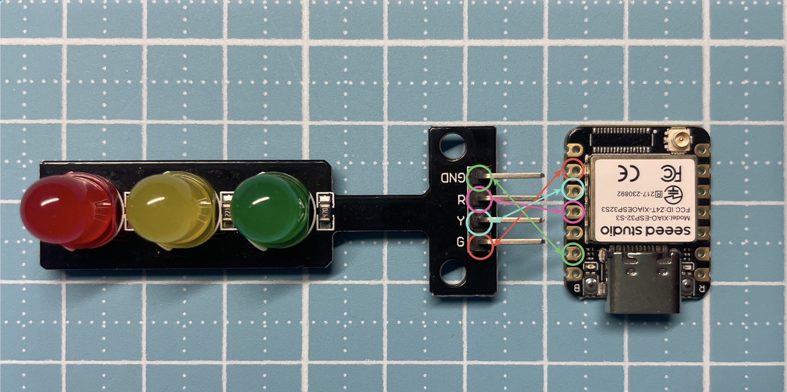

圖片來源：
Seeed Studio 官方文件
本教學使用 Seeed XIAO ESP32-S3 搭配三顆 LED， 模擬「紅、綠、黃」交通號誌。
GPIO 腳位配置：

MicroPython 的 Timer 可以在背景定時執行程式， 不需要使用
while True 搭配 sleep()。
sleep()，
否則可能造成系統不穩定。
將以下程式碼貼到 Thonny，並上傳到 ESP32-S3 執行：
from machine import Pin, Timer
# 從 machine 模組匯入 Pin（控制腳位）與 Timer（定時器）
# === LED 腳位設定（共陰極：GPIO=1 亮） ===
red = Pin(9, Pin.OUT)
yellow = Pin(8, Pin.OUT)
green = Pin(7, Pin.OUT)
# === 燈號狀態表 ===
# 每一組代表 (紅燈, 綠燈, 黃燈)
# 1 = 亮，0 = 滅
states = [
(1, 0, 0), # 紅燈
(0, 1, 0), # 綠燈
(0, 0, 1), # 黃燈
]
state_index = 0
def update_led(timer):
global state_index
r, g, y = states[state_index]
red.value(r)
green.value(g)
yellow.value(y)
state_index = (state_index + 1) % len(states)
# === 設定定時器 ===
tim = Timer(0)
tim.init(
period=1000, # 1 秒
mode=Timer.PERIODIC,
callback=update_led
)